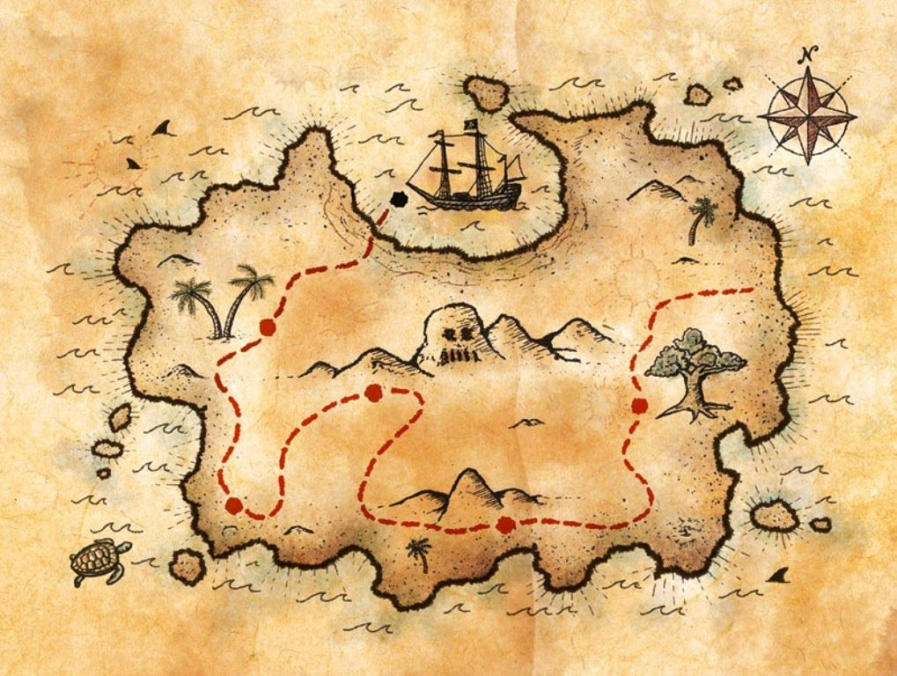

Um dia desses, um menino estava caminhando pela rua e acho um papel com um caminho de um tesouro
indo para o embarque do navios
Guerra contra a china
Desembarque e acampamento
desistiu a caça ao tesouro com medo de morrer

A procura de suplemento e armaduras para continuar a caça ao tesouro
Explorando a espanha pra conquistar aliados pra a encontra do tesouro
No Amazonas, a busca pela cidade perdida se intensifica. Você se depara com um rio bifurcado.
De volta ao caminho do tesouro com a espanha e portugal
O galera estamos chegando nuna cidade perdida vamos procurar armamento e comidas
embarque nos tanque e carros de guerra
Dentro da cidade perdida, você descobre tesouros inimagináveis e decide se dedicar a estudar e preservar este lugar

finalmente encontramos o báu do tesouro